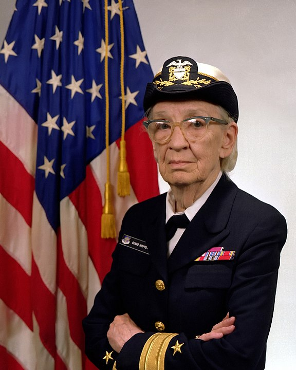

Photograph from 1984
 Unite States of Americas
Unite States of AmericasFor the residential college, see Grace Hopper College. For the submarine cable, see Grace Hopper (submarine communications cable).
Grace Brewster Murray Hopper (née Murray ; December 9, 1906 – January 1, 1992) was an American computer scientist and United States Navy rear admiral.[1] One of the first programmers of the Harvard Mark I computer, she was a pioneer of computer programming who invented one of the first linkers. Hopper was the first to devise the theory of machine-independent programming languages, and the FLOW-MATIC programming language she created using this theory was later extended to create COBOL, an early high-level programming language still in use today.
Prior to joining the Navy, Hopper earned a Ph.D. in mathematics from Yale University and was a professor of mathematics at Vassar College. Hopper attempted to enlist in the Navy during World War II but was rejected because she was 34 years old. She instead joined the Navy Reserves. Hopper began her computing career in 1944 when she worked on the Harvard Mark I team led by Howard H. Aiken. In 1949, she joined the Eckert– Mauchly Computer Corporation and was part of the team that developed the UNIVAC I computer. At Eckert–Mauchly she managed the development of one of the first COBOL compilers. She believed that a programming language based on English was possible. Her compiler converted English terms into machine code understood by computers. By 1952, Hopper had finished her program linker (originally called a compiler), which was written for the A-0 System.[2][3][4][5] During her wartime service, she co-authored three papers based on her work on the Harvard Mark 1.
In 1954, Eckert–Mauchly chose Hopper to lead their department for automatic programming, and she led the release of some of the first compiled languages like FLOW-MATIC. In 1959, she participated in the CODASYL consortium, which consulted Hopper to guide them in creating a machine-independent programming language. This led to the COBOL language, which was inspired by her idea of a language being based on English words. In 1966, she retired from the Naval Reserve, but in 1967 the Navy recalled her to active duty. She retired from the Navy in 1986 and found work as a consultant for the Digital Equipment Corporation, sharing her computing experiences.
The U.S. Navy Arleigh Burke-class guided-missile destroyer USS Hopper was named for her, as was the Cray XE6 "Hopper" supercomputer at NERSC.[6] During her lifetime, Hopper was awarded 40 honorary degrees from universities across the world. A college at Yale University was renamed in her honor. In 1991, she received the National Medal of Technology. On November 22, 2016, she was posthumously awarded the Presidential Medal of Freedom by President Barack Obama.[7]
"To me programming is more than an important practical art. It is also a gigantic undertaking in the foundations of knowledge."
| Grace Murray Hopper | |
|---|---|
|

Photograph from 1984 |
|
| Nickname | "Amazing Grace" |
| Born | December 9, 1906 |
| Died | January 1, 1992 (aged 85) Arlington, Virginia , U.S. |
| Place of burial | Arlington National Cemetery |
| Allegiance | Unite States of Americas |